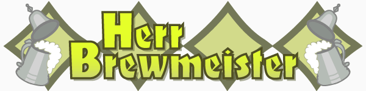

Beginning in 2005, the Spoetzl Brewery in Shiner, Texas, started a countdown to its 100th anniversary by releasing the first in a series of annual, limited-edition brews. Shiner 96 – referring to their 96th anniversary, not a 1996 vintage – was the first to be released. It was a Märzen/Oktoberfest-style ale that received generally favorable reviews from the readers of Beer Advocate magazine.
Shiner 97, a “Bohemian black lager,” was released the following year. (The description “Bohemian black lager” is a misleading bit of marketing speak. The brew was actually a schwarzbier, or “black beer,” and the use of “Bohemian” seems intended only to remind its audience of Shiner’s Czech roots – as if most people actually know Bohemia is in the Czech Republic.)
I tried Shiner 97 and hated it. The beer was limp, weak, and had a stale, smoky aftertaste that reminded me of an old charcoal grill that went into winter storage without being cleaned. I was disappointed that Spoetzl, whose Shiner Bock is respectable and whose Hefeweizen borders on greatness, would produce such a pitiful brew.
Imagine my surprise, then, when Spoetzl made Shiner 97 part of its permanent lineup. Re-branded as simply Bohemian Black Lager, billboards have popped up all over town: “Don’t be afraid of the dark.” I’m not. So I tried it again.
I’m not much of a conspiracy theorist, but there’s something Spoetzl isn’t telling us. Despite claims that Bohemian Black is the same as Shiner 97, it tastes completely different. Shiner 97 was as palatable as an ashtray at a Miami nursing home; Bohemian Black is actually very decent.
James Elder, a beer specialist at Austin’s Grape Vine Market, confirmed my suspicions: He told me I wasn’t the first person to say it’s a completely different beer. Since I didn’t buy the Shiner 97 pack at Grape Vine, I wasn’t simply the victim of a skunky six. It must be a different beer.
Conspiracies aside, the release of Bohemian Black Lager suggests Spoetzl is using their 100th anniversary countdown to achieve two goals: (1) make more money by offering limited-edition, collector’s item–brews; and (2) audition new recipes for the permanent lineup. They’re getting their customers to vote with their dollars and effectively pay to participate in market research. Brilliant!
Spoetzl is about to release its fourth anniversary brew, Shiner 99, in a matter of weeks or days. To mark this occasion, I’ve reviewed Shiner’s latest offerings: Bohemian Black Lager (formerly Shiner 97) and the almost-vanished Shiner 98 “Bavarian-style amber” (another somewhat-inaccurate, marketing-inspired name).
Bohemian Black Lager

It’s strange that Spoetzl decided to brew a schwarzbier (“black beer”). Though it’s been around for hundreds of years – the first documented mention of the style dates back to 1390 – and is commonplace in Germany, it’s rare in the United States. According to Wikipedia, only a small handful of American brewers produce schwarzbier, the most well-known of whom is Samuel Adams.
So what, exactly, is schwarzbier? Most importantly, it’s a lager, which means it’s bottom-fermented at colder temperatures than an ale, which is top-fermented at warmer temperatures. (Top- and bottom-fermentation refers to whether the yeast falls to the bottom or floats to the top of the fermentation vessel.) Lagers are usually less fruity or spicy than ales and can achieve a much higher alcohol content. The strongest lagers of the German doppelbock (“double bock”) style can reach 14% ABV. By contrast, typical lagers contain 3.5–5% ABV, and most wines hover around 12.5% ABV.
Dark beers get their dark, rich color from the roasted and burnt malts used in the brewing process. While other dark beers – namely porters and stouts (both ales) – get their bitter flavor from these malts, schwarzbier’s bitterness is derived primarily from a higher proportion of hops. (And don’t let the name confuse you: Not every “black” beer is a lager. New Belgium, the makers of Fat Tire, brew an excellent “Brussels-style black ale” called 1554. As you may guess by mention of “ale” in its description, it’s not a schwarzbier – it’s a Belgian dark ale.)
Here’s how the Spoetzl Brewery describes Bohemian Black Lager on the bottle:
First brewed to commemorate our 97th anniversary, this Bohemian Black Lager remains true to the old-world heritage of the German and Czech immigrants who settled Shiner. Imported Czech Saaz and Styrian hops, and select roasted malts make this “schwarzbier” our darkest brew yet.
Bohemian Black Lager pours clear with dark, brown-black color and a thin, light-brown head. Its aroma, while sweet and malty, is a bit weak.
Like other schwarzbiers, it’s full-bodied with a pleasant mouthfeel. Roasted malts dominate the flavor with a faint chocolately note and just a hint of vanilla. (Some people claim they taste a bit of coffee, too, but I think they’re confusing roasted malts with roasted coffee beans.) While it finishes smoothly, there’s just a hint of the ugly, smoky flavor of the Shiner 97 at the back of the nose. Like many Shiner beers, it’s somewhat watery and without bite, which isn’t necessarily a bad thing if you’re drinking a six-pack on a hot, summer day – this is, after all, a Texas brew. Bottom line: It’s highly drinkable, but not at all impressive or memorable. Good for a barbecue, uninspiring at a bar.
I sincerely appreciate, though, that Shiner has used their populist appeal and market share to expose people to a new type of beer. (How many average beer drinkers will choose something called “Köstritzer,” for example, over an old standby like Lone Star or Budweiser?) I realize their reasons aren’t altruistic, but I’m always happy when mainstream brands use their sway to prominently advertise and stock unusual brews.
Shiner 98: Bavarian-Style Amber
The description “Bavarian-style amber” is another bit of Spoetzl marketing speak. Shiner 98 is actually a Vienna lager, named after its city of origin. (Strangely, this relatively rare brew is quote prominent throughout Mexico thanks to the Austrian immigrants who settled there centuries ago. Both Dos Equis and Negra Modelo are Vienna lagers.) Their use of “Bavarian” is true in that they brew this lager with Munich malt, which gives the brew a slightly darker color than those brewed with Pilsner or Vienna malts.
From the Shiner website:
Shiner 98 is a tribute to our German and Czech heritage. This Bavarian-Style Amber is an Old World lager with a distinctive hop floral aroma and a sweet finish. It’s created using the Munich Malt process, invoking a rich golden-brown color. Then, only the finest German hops are added to give 98 its signature finish.
Shiner 98 pours clear with a golden-copper color and a medium, off-white head. It smells great – sweet, almost honey-like, and toasty. The “distinctive hop floural aroma” described on the bottle is completely accurate and very enticing.
The flavor contains lots of subtleties, which is probably why some people rave over this beer, but they’re too weak to fully enjoy. (Shiner consistently pulls punches in this department. Perhaps they think their audience will be turned off by intense, unusual flavors. They may be right.) The carbonation is crisp – maybe even harsh – and there’s a strange, metallic bitterness that creeps in as you swallow. It finishes with a harsher, lingering bitterness and an unpleasant dryness. It left my tongue with a strange, coated feeling that made we want to take another drink just to hit the flavor Reset button.
Don’t get me wrong – Shiner 98 is an above-average beer. Like virtually every beer, it’s worth trying, but I don’t think I’ll buy it again. This is a moot point, though, as it’s almost entirely disappeared from stores, never to return – unless they make it a permanent fixture like Shiner 97/Bohemian Black Lager. (Maybe they’ll improve on this recipe, too!)
Shiner 98 promotional video
Shiner 99: The great unknown
According to James Elder at Grape Vine Market, Shiner 99 could hit shelves later this week. “But I wouldn’t quote me on that,” he wrote in an email.
But what it is, exactly, no one will say. Spoetzl’s keeping a tight lid on this brew. Considering their emphasis on German-Czech heritage, it’s safe to assume they won’t stray into the territory of English porters or Belgian witbiers.
Not many German and Czech styles remain untouched by Spoetzl – at least the ones that can be mass produced without spending a fortune. Considering Shiner 99 was brewed during the winter, I’m tempted to say it will be an eisbock (“ice brew”), a process that involves freezing some of the water and removing the ice. Concentrating the brew, however, can increase the ABV to 9–15%, which would raise the cost – and probably the ire of the TABC.
No, it’s going to be something more practical. Perhaps a roggenbier (“rye beer”) or a more classical Dortmunder lager. But whatever Shiner 99 turns out to be, we’ll all be left wondering: What do they have in store for Shiner 100?
Herr Brewmeister is a regular column about delicious beverages – beer, wine, coffee, whatever – and the stuff that makes them happen. Got an idea for a story? Tell us about it!
About the author Todd Ross Nienkerk is a founding editor of That Other Paper and reluctant beer snob.


Comments
Shiner 97=awful
Fat Tire=even worse, I don’t get why people like this
Grapevine=sweetness
Looking forward to your next one.
Texas Beer reported that Shiner 99 was released a few days ago. It’s a “Munich-style Helles lager.” You can read some initial reviews on Beer Advocate’s website.